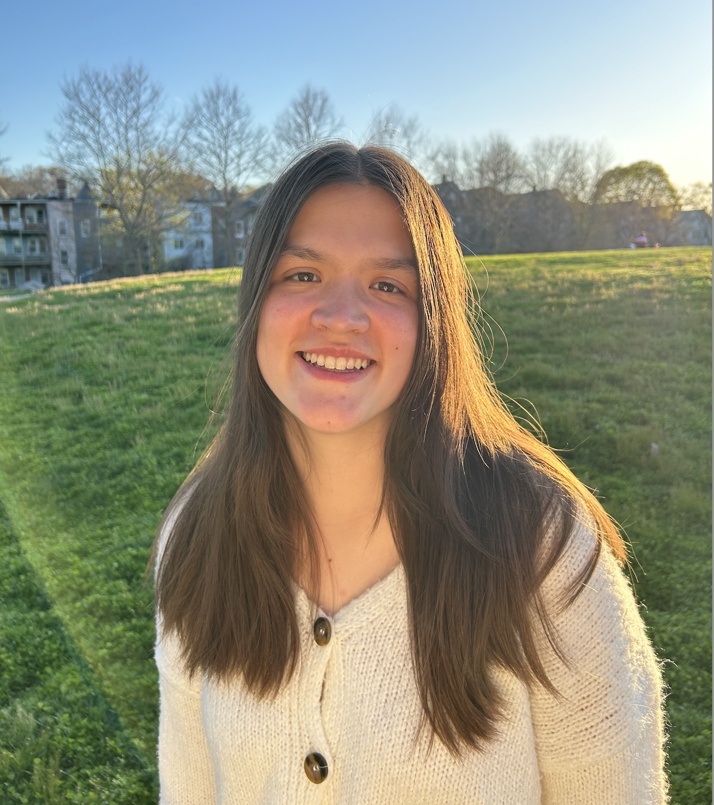
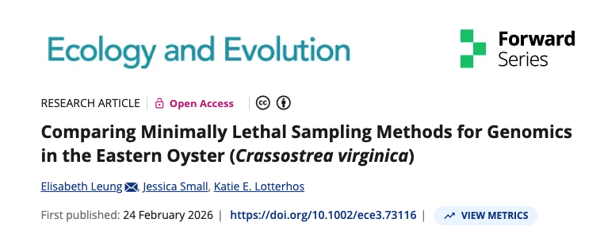
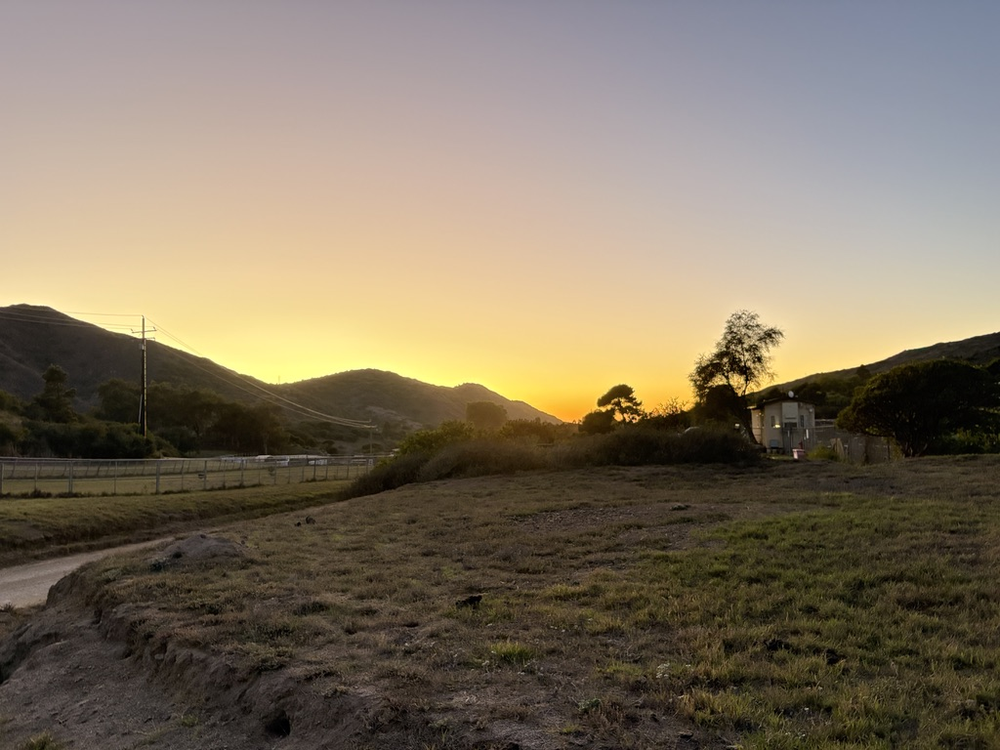
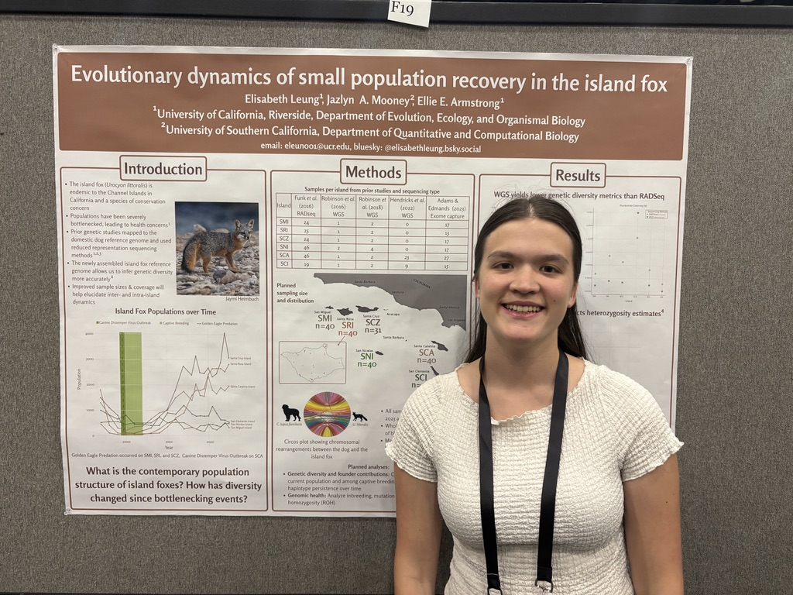
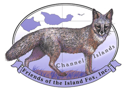

I am a second year Evolution, Ecology, and Organismal Biology PhD student in the Armstrong Lab at University of California Riverside. I am also an NSF Gradaute Research Fellow.

Ph.D. Research
Evolutionary Genomics of the Island Fox
Prior Research
Eastern Oyster Genetics & Method Development
Genomics of an imperiled tree
Sed tempus urna et pharetra pharetra massa massa ultricies. Porttitor rhoncus dolor purus non enim praesent. Id aliquet risus feugiat in ante metus dictum.
February 2026
My first paper (& first first-author paper) was accepted to Ecology & Evolution.
You can read it here: Comparing Minimally Lethal Sampling Methods for Genomics in the Eastern Oyster (Crassostrea virginica)

October 2025
I visited Santa Catalina Island for the first time! I shadowed the team as they ran their yearly monitoring and trapping of the island foxes.
Their annual monitoring includes blood samples which can be used for future genomic analyses.

June 2025
I presented a poster at Evolution 2025, showing the plans for my dissertation research and highlighting the need for whole-genome seqeuncing!

May 2025
I presented at the Annual Island Fox Meeting in Ventura, CA where I shared updates on our genomic projects.
April 2025
I recieved the NSF GRFP!
July 2024
I recieved a grant from Friends of the Island Fox to do genomic anaylses of the island fox!

December 2023
I graduated from Northeastern University summa cum laude with a B.S. in Data Science and Ecology & Evolutionary biology!